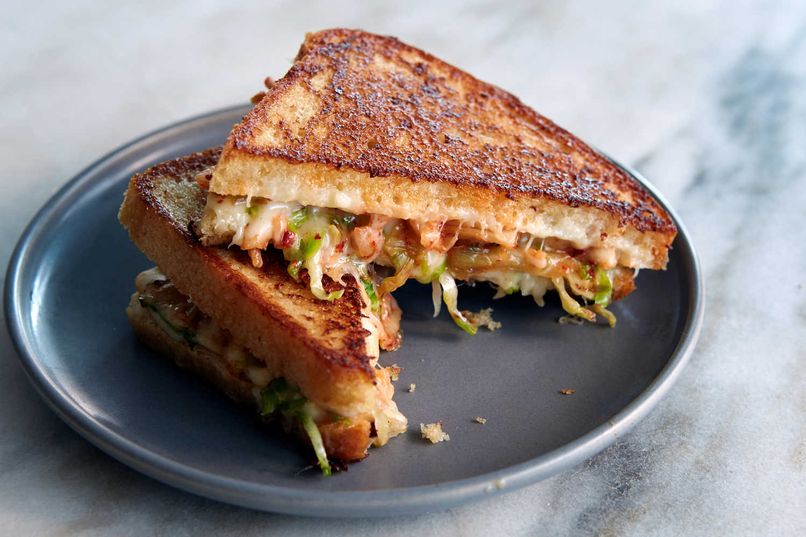

Home
Kimchi Sando

Here, kimchi and mozzarella cheese come together
for a twist on the classic grilled cheese.
Mildly flavored mozzarella is an especially good choice
in this recipe because it lets the kimchi shine, but you
could also add 1/4 cup of grated Cheddar, Monterey Jack
or even pepper Jack for more kick. If you have
grilled steak, roasted vegetables or practically
any other savory leftover in your fridge, chop
it up and add about 1/4 cup to your sandwich
along with the kimchi.
For this recipe you will need:
- 2 slice of bread
- 1 tbsp of mayonaise
- 1/2 cup of mozzarella
- 1/4 cup of drained and chopped kimchi
Directions
- Heat a heavy skillet over medium-low.
Thinly spread 1 side of each slice of bread with
thetablespoon mayonnaise. Place the bread,
mayonnaise side down, in the skillet
and divide the mozzarella evenly over the slices.
- When the cheese has just melted (no individual
shreds of cheese remain), 6 to 10 minutes, add
the kimchi to one side. Use a spatula to top with
the other slice of bread, cheese side down. Press
with the spatula to meld, then let cook, covered,
flipping as needed to prevent burning, until the
bread is crusty-brown and the sandwich is warmed
through, 2 to 4 minutes.